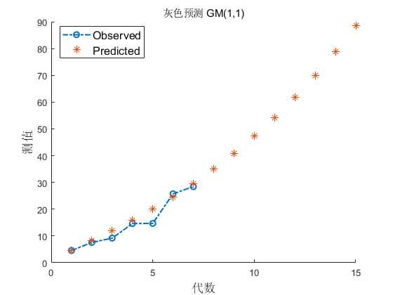

Contents
Grey Model step by step
Script by adqeor @XJTU
使用GM(1,1)模型, 进行时间序列预测
输入等间隔采样的 x_0
对指数型数据更有效
History:
[rev0.1.2] 2 Feb. 2020:
更改了试探偏置等处的程序逻辑;
更改了绘图;
增加了测试数据;
修复了偏置bug;
将部分error变为warning, 即使检验失败也进行绘图(部分需要error跳出行为的除外);
将级比检验抽象为本地函数;
[rev0.1.1] 15 Sept. 2020:
Last known archive.
updated in Sept. 1, 2020, error()
forecaste using GM(1,1), Jul. 7, 2020
clc;
close all;
fprintf('GM(1,1)模型预测\n');
GM(1,1)模型预测
样本输入
t = 2.5:.4:5;
x_0 = 2*exp(.5*t) + 4*randn(size(t));
n_sampleCount = length(x_0);
n_succPredict = 8;
alpha = .8;
if n_sampleCount < 4
error('预测需要至少4个样本, 当前仅有%d个\n', n_sampleCount);
elseif min(x_0) < 0
error('样本值应非负, 可考虑手动增加偏置');
end
级比检验, 并对不通过者做试探性偏置
bias = 0;
biasFlag = false;
biasTrialCount = 0;
biasTrialMax = 200;
while ~ratioTrial(x_0 + bias, n_sampleCount)
biasFlag = true;
biasTrialCount = biasTrialCount + 1;
if biasTrialCount > biasTrialMax
error('级比检验失败, %d次尝试仍未找到合适的偏置', biasTrialMax)
end
bias = mean(x_0) * (1+ randn());
end
if biasFlag
x_0 = x_0 + bias;
fprintf('%d次尝试后找到偏置 %.2f 满足级比检验.\n', biasTrialCount, bias);
disp('务必检验结果, 避免动态范围丢失');
fprintf('参考: 差模动态范围%f, 原始共模幅度%f\n\n',max(x_0)-min(x_0),mean(x_0));
end
6次尝试后找到偏置 32.82 满足级比检验.
务必检验结果, 避免动态范围丢失
参考: 差模动态范围23.858425, 原始共模幅度47.785956
系数计算
x_1 = cumsum(x_0);
z_1 = x_1;
Y = x_0';
B = [-z_1',ones(n_sampleCount,1)];
coeff = B\Y;
a = coeff(1); b = coeff(2);
预测, 通过一阶差分
x_hat_1 = (x_0(1)-b/a) * exp( -a*(1:n_succPredict+n_sampleCount) ) + b/a;
x_hat_0 = diff([0,x_hat_1]);
x_hat_0(1) = x_0(1);
残差检验
residual = max( abs(1-x_hat_0(1:n_sampleCount)./x_0) );
fprintf('残差极大为 %.3f, ',residual);
if residual < .1
fprintf('达到较高要求.\n');
elseif residual < .2
fprintf('达到一般要求.\n');
else
warning('未能达到要求.');
end
残差极大为 0.113, 达到一般要求.
极比偏差检验
ratio = x_0(1:end-1) ./ x_0(2:end);
ratioDeviation = max( ratio .* abs(1-(1-.5*a)/(1+.5*a)) );
fprintf('级比偏差极大为 %.3f, ',ratioDeviation);
if ratioDeviation < .1
disp('达到较高要求.');
elseif ratioDeviation < .2
disp('达到一般要求.');
else
warning('未能达到要求.');
end
级比偏差极大为 0.087, 达到较高要求.
取消偏置
if biasFlag
x_0 = x_0 - bias;
x_hat_0 = x_hat_0 - bias;
end
预测结果图示
figure('Name','使用 GM(1,1) 模型的预测');
hold on;
plot(x_0,'-.O', 'LineWidth',1.5);
plot(x_hat_0, '*', 'MarkerSize',8);
xlabel('代数', 'FontSize',13);
ylabel('测值', 'FontSize',13);
legend({'Observed','Predicted'}, 'FontSize',12, 'Location','best');
title('灰色预测 GM(1,1)');
hold off;
function status = ratioTrial(x, n)
ratio = x(1:end-1) ./ x(2:end);
status = max(ratio) < exp(2/(n+1)) && min(ratio) > exp(-2/(n+1));
end
